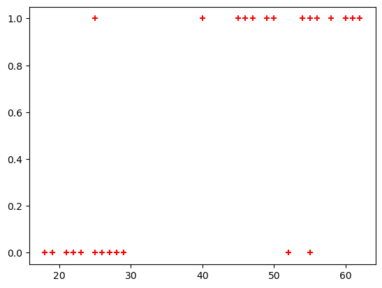
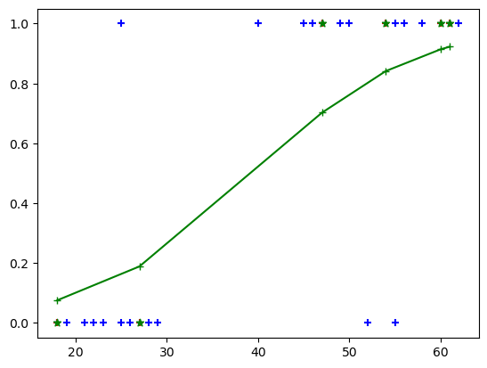

import pandas as pd
from matplotlib import pyplot as plt
from pathlib import Path
import numpy as npLogistic Regression
Predicted value is categorical
Classification types
- Binary Classification
- Multiclass Classification
Binary Classification
path = Path('Data/insurance_data.csv')
df = pd.read_csv(path)
df.head()| age | bought_insurance | |
|---|---|---|
| 0 | 22 | 0 |
| 1 | 25 | 0 |
| 2 | 47 | 1 |
| 3 | 52 | 0 |
| 4 | 46 | 1 |
\(\text{sigmoid}(z) = \dfrac{1}{1+e^-z}\) where e = Euler’s number ~ 2.71828
plt.scatter(df.age,df.bought_insurance,marker='+',color='red')<matplotlib.collections.PathCollection>
from sklearn.model_selection import train_test_split
from sklearn.linear_model import LogisticRegressionX_train, X_test, y_train, y_test = train_test_split(df[['age']],df.bought_insurance,train_size=0.8)X_test| age | |
|---|---|
| 12 | 27 |
| 25 | 54 |
| 7 | 60 |
| 2 | 47 |
| 10 | 18 |
| 9 | 61 |
model = LogisticRegression()model.fit(X_train, y_train)LogisticRegression()In a Jupyter environment, please rerun this cell to show the HTML representation or trust the notebook.
On GitHub, the HTML representation is unable to render, please try loading this page with nbviewer.org.
LogisticRegression()
X_test| age | |
|---|---|
| 12 | 27 |
| 25 | 54 |
| 7 | 60 |
| 2 | 47 |
| 10 | 18 |
| 9 | 61 |
y_predicted = model.predict(X_test)
y_predictedarray([0, 1, 1, 1, 0, 1])y_probability = model.predict_proba(X_test)model.score(X_test,y_test)1.0array1 = np.array(X_test)
# Stack the arrays horizontally
combined_array = np.hstack((array1, y_probability[:,1].reshape(-1, 1)))
print("Combined Array:")
print(combined_array)Combined Array:
[[27. 0.18888707]
[54. 0.84143616]
[60. 0.91401439]
[47. 0.70233749]
[18. 0.07590529]
[61. 0.92268871]]sorted_array = np.sort(combined_array, 0)
sorted_array[:,0]array([18., 27., 47., 54., 60., 61.])plt.scatter(df.age,df.bought_insurance,marker='+',color='blue')
plt.scatter(X_test,y_test,marker='+',color='red')
plt.plot(sorted_array[:,0],sorted_array[:,1],marker='+',color='green')
plt.scatter(X_test,y_predicted,marker='*',color='green')<matplotlib.collections.PathCollection>
Multiclass Regression
from sklearn.datasets import load_digits
import matplotlib.pyplot as pltdigits = load_digits()plt.gray()
for i in range(2):
plt.matshow(digits.images[i])<Figure size 640x480 with 0 Axes>

dir(digits)['DESCR', 'data', 'feature_names', 'frame', 'images', 'target', 'target_names']digits.target[:]array([0, 1, 2, ..., 8, 9, 8])from sklearn.linear_model import LogisticRegression
from sklearn.model_selection import train_test_splitmodel = LogisticRegression()X_train, X_test, y_train, y_test = train_test_split(digits.data,digits.target, test_size=0.2)model.fit(X_train, y_train)/home/ben/mambaforge/envs/cfast/lib/python3.11/site-packages/sklearn/linear_model/_logistic.py:460: ConvergenceWarning: lbfgs failed to converge (status=1):
STOP: TOTAL NO. of ITERATIONS REACHED LIMIT.
Increase the number of iterations (max_iter) or scale the data as shown in:
https://scikit-learn.org/stable/modules/preprocessing.html
Please also refer to the documentation for alternative solver options:
https://scikit-learn.org/stable/modules/linear_model.html#logistic-regression
n_iter_i = _check_optimize_result(LogisticRegression()In a Jupyter environment, please rerun this cell to show the HTML representation or trust the notebook.
On GitHub, the HTML representation is unable to render, please try loading this page with nbviewer.org.
LogisticRegression()
model.score(X_test, y_test)0.9722222222222222model.predict(digits.data[0:5])array([0, 1, 2, 3, 4])y_predicted = model.predict(X_test)array([5, 4, 0, 2, 9, 5, 3, 2, 0, 4, 1, 3, 5, 1, 5, 3, 6, 3, 5, 2, 3, 2,
0, 8, 1, 9, 6, 7, 0, 8, 9, 4, 5, 7, 2, 4, 4, 4, 8, 3, 7, 8, 3, 6,
4, 9, 2, 4, 6, 3, 5, 1, 6, 0, 7, 9, 4, 8, 8, 3, 8, 9, 5, 6, 4, 9,
8, 5, 2, 0, 7, 7, 6, 2, 5, 8, 9, 5, 7, 5, 5, 4, 4, 8, 9, 8, 9, 2,
1, 0, 7, 4, 8, 6, 3, 3, 3, 8, 1, 1, 5, 6, 7, 6, 1, 7, 2, 8, 1, 5,
3, 4, 4, 9, 5, 0, 7, 0, 6, 3, 2, 2, 4, 3, 4, 8, 6, 0, 8, 0, 3, 1,
4, 9, 0, 3, 2, 9, 9, 6, 7, 8, 4, 6, 8, 6, 9, 0, 4, 9, 7, 6, 8, 3,
9, 6, 0, 7, 1, 7, 2, 5, 2, 3, 3, 8, 0, 0, 9, 4, 4, 5, 9, 0, 8, 8,
7, 9, 9, 8, 3, 3, 8, 7, 0, 4, 6, 6, 1, 1, 9, 0, 3, 1, 3, 9, 2, 8,
3, 7, 4, 5, 5, 7, 2, 1, 9, 5, 5, 7, 9, 1, 9, 1, 7, 6, 5, 1, 6, 7,
5, 6, 7, 2, 9, 4, 9, 0, 8, 3, 3, 6, 0, 1, 3, 3, 9, 6, 1, 5, 1, 6,
6, 3, 1, 0, 1, 0, 2, 2, 1, 9, 7, 9, 1, 0, 9, 1, 3, 8, 1, 5, 0, 0,
8, 6, 1, 2, 6, 6, 9, 5, 3, 6, 3, 8, 9, 8, 6, 9, 7, 2, 8, 5, 9, 6,
9, 7, 3, 7, 4, 3, 2, 1, 5, 8, 0, 8, 6, 6, 7, 5, 6, 6, 4, 6, 3, 7,
2, 3, 6, 8, 5, 3, 1, 6, 8, 8, 9, 0, 8, 5, 6, 8, 0, 1, 2, 0, 0, 1,
9, 6, 7, 6, 3, 2, 0, 5, 5, 2, 7, 1, 6, 4, 6, 0, 2, 5, 2, 0, 7, 6,
9, 6, 1, 9, 1, 1, 0, 0])from sklearn.metrics import confusion_matrix
import seaborn as sncm = confusion_matrix(y_test, y_predicted)
plt.figure(figsize = (10,7))
sn.heatmap(cm, annot=True)
plt.xlabel('Predicted')
plt.ylabel('Truth')Text(95.72222222222221, 0.5, 'Truth')
from sklearn.metrics import classification_reportreport = classification_report(y_test, y_predicted)
print(report) precision recall f1-score support
0 0.97 1.00 0.99 35
1 0.97 0.97 0.97 36
2 0.93 0.96 0.95 28
3 0.97 0.95 0.96 40
4 0.96 1.00 0.98 27
5 0.94 0.94 0.94 35
6 1.00 1.00 1.00 46
7 1.00 0.97 0.98 33
8 0.97 0.97 0.97 38
9 0.98 0.95 0.96 42
accuracy 0.97 360
macro avg 0.97 0.97 0.97 360
weighted avg 0.97 0.97 0.97 360